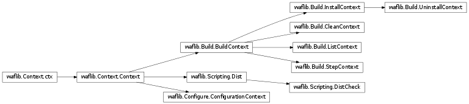

Context¶
Classes and functions required for waf commands
- waflib.Context.HEXVERSION¶
Constant updated on new releases
- waflib.Context.WAFVERSION¶
Constant updated on new releases
- waflib.Context.WAFREVISION¶
Constant updated on new releases
- waflib.Context.ABI¶
Version of the build data cache file format (used in waflib.Context.DBFILE)
- waflib.Context.DBFILE¶
Name of the pickle file for storing the build data
- waflib.Context.APPNAME¶
Default application name (used by waf dist)
- waflib.Context.VERSION¶
Default application version (used by waf dist)
- waflib.Context.TOP¶
The variable name for the top-level directory in wscript files
- waflib.Context.OUT¶
The variable name for the output directory in wscript files
- waflib.Context.WSCRIPT_FILE¶
Name of the waf script files
- waflib.Context.launch_dir¶
Directory from which waf has been called
- waflib.Context.run_dir¶
Location of the wscript file to use as the entry point
- waflib.Context.top_dir¶
Location of the project directory (top), if the project was configured
- waflib.Context.out_dir¶
Location of the build directory (out), if the project was configured
- waflib.Context.waf_dir¶
Directory containing the waf modules
- waflib.Context.local_repo¶
Local repository containing additional Waf tools (plugins)
- waflib.Context.remote_repo¶
Remote directory containing downloadable waf tools. The missing tools can be downloaded by using:
$ waf configure --download
- waflib.Context.remote_locs¶
Remote directories for use with waflib.Context.remote_repo
- waflib.Context.g_module¶
Module representing the main wscript file (see waflib.Context.run_dir)
- waflib.Context.classes¶
List of waflib.Context.Context subclasses that can be used as waf commands. The classes are added automatically by a metaclass.
- waflib.Context.create_context(cmd_name, *k, **kw)[source]¶
Create a new waflib.Context.Context instance corresponding to the given command. Used in particular by waflib.Scripting.run_command()
Parameters: - cmd_name (string) – command
- k (dict) – arguments to give to the context class initializer
- k – keyword arguments to give to the context class initializer
- class waflib.Context.store_context(name, bases, dict)[source]¶
Bases: type
Metaclass for storing the command classes into the list waflib.Context.classes Context classes must provide an attribute ‘cmd’ representing the command to execute
- class waflib.Context.ctx¶
Bases: object
Base class for the waflib.Context.Context classes
- class waflib.Context.Context(**kw)[source]¶
Bases: waflib.Context.ctx
Default context for waf commands, and base class for new command contexts.
Context objects are passed to top-level functions:
def foo(ctx): print(ctx.__class__.__name__) # waflib.Context.Context
Subclasses must define the attribute ‘cmd’:
Parameters: - cmd (string) – command to execute as in waf cmd
- fun (string) – function name to execute when the command is called

- errors¶
Shortcut to waflib.Errors provided for convenience
- tools¶
A cache for modules (wscript files) read by Context.Context.load()
- __hash__()[source]¶
Return a hash value for storing context objects in dicts or sets. The value is not persistent.
Returns: hash value Return type: int
- load(tool_list, *k, **kw)[source]¶
Load a Waf tool as a module, and try calling the function named waflib.Context.Context.fun from it. A tooldir value may be provided as a list of module paths.
Parameters: tool_list (list of string or space-separated string) – list of Waf tools to use
- pre_recurse(node)[source]¶
Method executed immediately before a folder is read by waflib.Context.Context.recurse(). The node given is set as an attribute self.cur_script, and as the current path self.path
Parameters: node (waflib.Node.Node) – script
- post_recurse(node)[source]¶
Restore self.cur_script and self.path right after waflib.Context.Context.recurse() terminates.
Parameters: node (waflib.Node.Node) – script
- recurse(dirs, name=None, mandatory=True, once=True)[source]¶
Run user code from the supplied list of directories. The directories can be either absolute, or relative to the directory of the wscript file. The methods waflib.Context.Context.pre_recurse() and waflib.Context.Context.post_recurse() are called immediately before and after a script has been executed.
Parameters: - dirs (list of string or space-separated string) – List of directories to visit
- name (string) – Name of function to invoke from the wscript
- mandatory (bool) – whether sub wscript files are required to exist
- once (bool) – read the script file once for a particular context
- exec_command(cmd, **kw)[source]¶
Execute a command and return the exit status. If the context has the attribute ‘log’, capture and log the process stderr/stdout for logging purposes:
def run(tsk): ret = tsk.generator.bld.exec_command('touch foo.txt') return ret
This method captures the standard/error outputs (Issue 1101), but it does not return the values unlike waflib.Context.Context.cmd_and_log()
Parameters: - cmd – command argument for subprocess.Popen
- kw – keyword arguments for subprocess.Popen
- cmd_and_log(cmd, **kw)[source]¶
Execute a command and return stdout if the execution is successful. An exception is thrown when the exit status is non-0. In that case, both stderr and stdout will be bound to the WafError object:
def configure(conf): out = conf.cmd_and_log(['echo', 'hello'], output=waflib.Context.STDOUT, quiet=waflib.Context.BOTH) (out, err) = conf.cmd_and_log(['echo', 'hello'], output=waflib.Context.BOTH) try: conf.cmd_and_log(['which', 'someapp'], output=waflib.Context.BOTH) except Exception as e: print(e.stdout, e.stderr)
Parameters: - cmd – args for subprocess.Popen
- kw – keyword arguments for subprocess.Popen
- fatal(msg, ex=None)[source]¶
Raise a configuration error to interrupt the execution immediately:
def configure(conf): conf.fatal('a requirement is missing')
Parameters: - msg (string) – message to display
- ex (exception) – optional exception object
- to_log(msg)[source]¶
Log some information to the logger (if present), or to stderr. If the message is empty, it is not printed:
def build(bld): bld.to_log('starting the build')
When in doubt, override this method, or provide a logger on the context class.
Parameters: msg (string) – message
- msg(msg, result, color=None)[source]¶
Print a configuration message of the form msg: result. The second part of the message will be in colors. The output can be disabled easly by setting in_msg to a positive value:
def configure(conf): self.in_msg = 1 conf.msg('Checking for library foo', 'ok') # no output
Parameters: - msg (string) – message to display to the user
- result (string or boolean) – result to display
- color (string) – color to use, see waflib.Logs.colors_lst
- start_msg(msg)[source]¶
Print the beginning of a ‘Checking for xxx’ message. See waflib.Context.Context.msg()
- end_msg(result, color=None)[source]¶
Print the end of a ‘Checking for’ message. See waflib.Context.Context.msg()
- waflib.Context.cache_modules¶
Dictionary holding already loaded modules, keyed by their absolute path. The modules are added automatically by waflib.Context.load_module()
- waflib.Context.load_module(path)[source]¶
Load a source file as a python module.
Parameters: path (string) – file path Returns: Loaded Python module Return type: module
- waflib.Context.load_tool(tool, tooldir=None)[source]¶
Import a Waf tool (python module), and store it in the dict waflib.Context.Context.tools
Parameters: - tool (string) – Name of the tool
- tooldir (list) – List of directories to search for the tool module